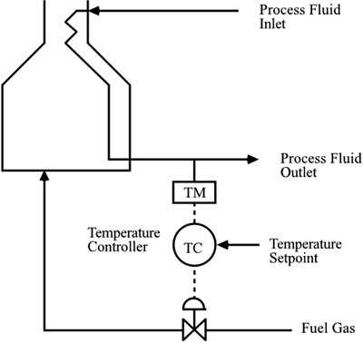
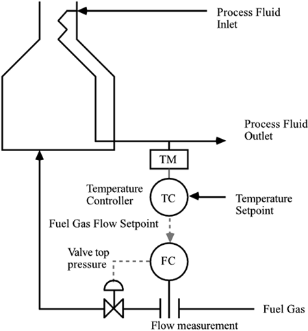
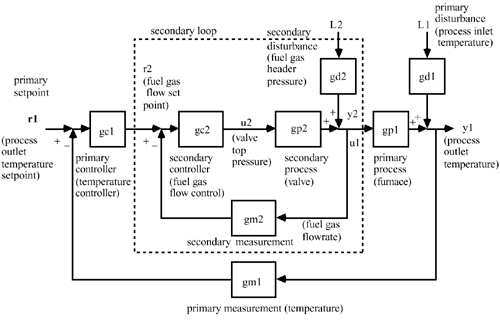
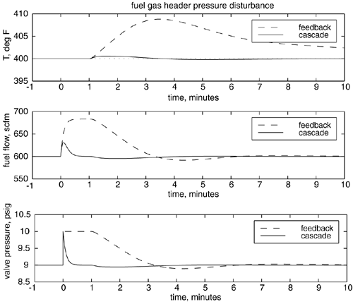
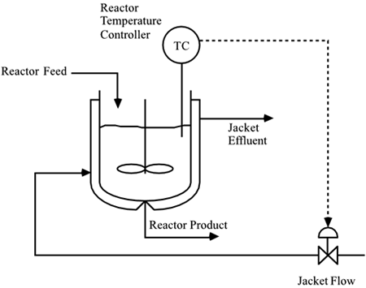
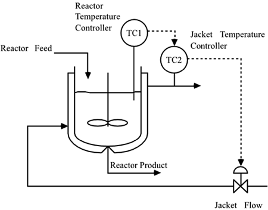
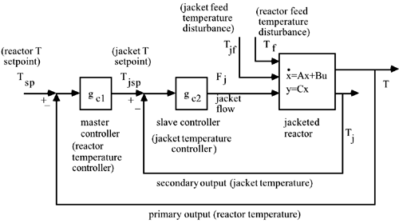

| [ Team LiB ] |
|
10.2 Introduction to Cascade ControlCascade control involves the use of multiple measurements and a single manipulated input. As a motivating example, consider the temperature-control problem shown in Figure 10-1, where a fired furnace is used to heat a process fluid stream. The outlet temperature is controlled by manipulating the valve position of the fuel gas control valve. Clearly, disturbances in the fuel gas header pressure (upstream of the valve) will end up changing the fuel gas flow rate, and, therefore, the outlet temperature. Also, any problems with the control valve, such as stiction or hysteresis (see Module 15), will affect the fuel gas flow rate. Figure 10-1. Feedback control of process outlet temperature. Cascade to Flow ControlThe best way to compensate for disturbances directly affecting the fuel gas flow rate is to cascade the temperature controller to a fuel gas flow controller, as shown in Figure 10-2. Here, the output of the temperature controller is the setpoint to the fuel gas flow controller. The output of the flow controller is the pressure to the control valve, which changes the valve position and, therefore, the flow rate. Any change in the fuel gas header pressure will be "felt" immediately by the flow measurement[1], allowing the flow controller to take immediate corrective action. A block diagram of this strategy is shown in Figure 10-3.
Figure 10-2. Cascade control of process outlet temperature. Figure 10-3. Cascade control block diagram for the fired heater. Series transfer function form. In this strategy, the temperature controller is known as the primary, master, or outer-loop controller, while the flow controller is the secondary, slave, or inner-loop controller. The dynamics of the flow control loop are very fast, making the flow controller easy to tune. The temperature-control loop is much slower, so the primary loop can be effectively tuned as if the flow controller response is instantaneous. For cascade control strategies where flow control is the inner loop, a control block diagram where the secondary and primary process transfer functions are in series (as in Figure 10-3) is natural. The primary disturbance (process inlet temperature) directly affects the primary output (process outlet temperature), with no direct effect on the secondary output (fuel gas flow rate, which is also the manipulated input for the primary process). The secondary disturbance (fuel gas header pressure) directly affects the secondary output, so the control block diagram shown in Figure 10-3 is relatively straightforward to generate. This is known as a series representation for the block diagram that is useful when the "secondary" process (such as the control valve or fuel gas flow rate) are naturally separated from the "primary" process (the heater and process fluid). It should be noted that other primary disturbances, such as process fluid flow rate, could easily be added to the diagram. See Exercise 9 for a numerical study of this process. An example of the improved performance achievable with cascade control is shown in Figure 10-4, where a 1-psig disturbance in fuel gas header pressure occurs at t = 0 minutes. In the cascade-control strategy (Figure 10-2), the flow controller (secondary controller) rejects the header pressure disturbance before it is even "felt" by the process outlet temperature, since there is a primary process time-delay of one minute. The standard feedback controller (Figure 10-1) has poor performance due to the process time delay. It should be noted that setpoint changes and responses to a primary disturbance (process feed temperature) are the same for both control strategies (see Exercise 9 for a numerical study). Figure 10-4. Response to a disturbance in fuel gas header pressure of 1 psig. Comparison of cascade control with standard feedback control. Reactor Temperature Cascade ControlAs another example of cascade control, consider the stirred-tank reactor shown in Figure 10-5. In the standard feedback-control strategy the temperature of the reactor is measured and the jacket flow rate is manipulated. If there is a disturbance in the jacket feed temperature, it will affect the jacket temperature, which will affect the reactor temperature. In the cascade-control strategy (Figure 10-6) the temperature of the reactor is measured and compared with the desired reactor temperature. The output of this reactor temperature controller is a setpoint to the jacket temperature controller. The jacket temperature controller manipulates the jacket flow rate. Notice that two measurements (reactor temperature and jacket temperature) are made but only one manipulated variable (jacket flow rate) is ultimately adjusted. Figure 10-5. Stirred-tank reactor. Standard feedback control. Figure 10-6. Stirred-tank reactor. Cascade control. In this strategy, the reactor temperature controller is the primary (master or outer loop) controller, while the jacket temperature controller is the secondary (slave or inner loop) controller. This is effective because the jacket temperature dynamics are normally significantly faster than the reactor temperature dynamics. An inner-loop disturbance, such as jacket feed temperature, will be "felt" by the jacket temperature before it has a significant effect on the reactor temperature. This inner-loop (secondary) controller then adjusts the manipulated variable before a substantial effect on the primary output has occurred. Notice that an appropriate block diagram representation of cascade control is less obvious here. Jacket flow rate certainly has a direct effect on the jacket temperature, which then affects the reactor temperature; one would think that a series representation would again be appropriate. Notice, however, that the jacket and reactor temperatures interact in a way that is different than the primary and secondary processes of the fired heater. Here, the reactor and jacket temperatures are directly coupled by the heat transfer between them. A change in the reactor temperature causes a change in jacket temperature and vice versa; a simple input-output transfer function block diagram does not truly capture this behavior. A more appropriate representation is shown in Figure 10-7, where a state space model is used to represent the interactions, and the temperatures are simply viewed as two outputs from the process. See Exercise 10 for a numerical study of a similar stirred-tank heater problem. Figure 10-7. Cascade control block diagram for a jacketed chemical reactor. State space form for the reactor. |
| [ Team LiB ] |
|